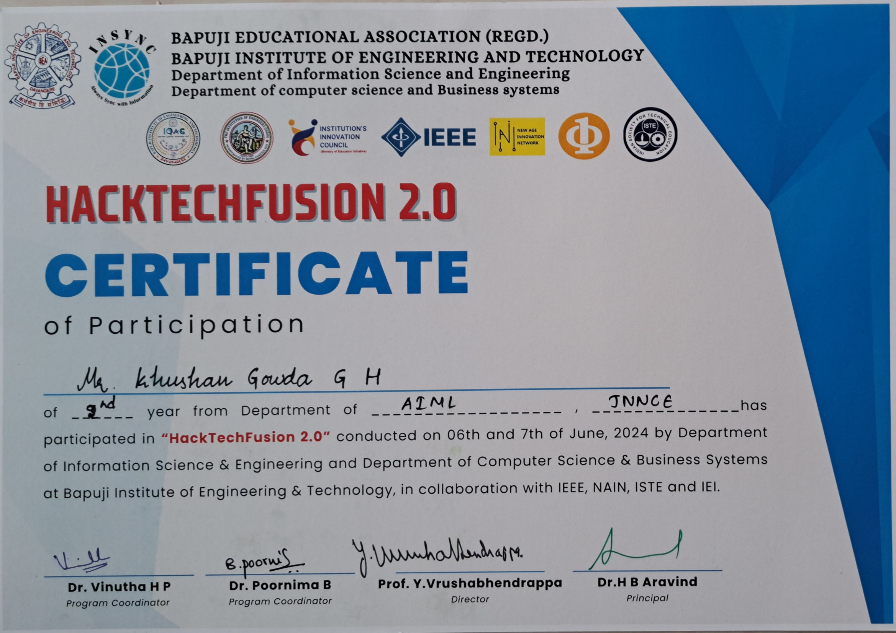

HacktechFusion 2.0
At the HacktechFusion 2.0 hackathon in BIET College, Davanagere, our team developed a website aimed at bridging the gap for unemployed graduates and unskilled students, enabling them to acquire the necessary skills for their desired careers. During the HacktechFusion 2.0 hackathon held in Davanagere, our team embarked on a project to create a website designed to provide a platform for unemployed graduates and unskilled students. The goal was to bridge the gap between their current skill levels and the requirements of the job market. Through our platform, users can explore and acquire the skills necessary for a wide range of careers, ensuring they are prepared for job opportunities in their chosen fields. The platform offers personalized skill development paths, job insights, and resources to help them upskill, ultimately improving their employability in today’s competitive market. 
IBM EcoEquify
At the IBM EcoEquify hackathon in BNMIT College, Bengaluru, a two-day event, our team developed a web page for water potability analysis, allowing customers to test if their drinking water is safe. We also built a customized waterbot and utilized data analytics and NLP for analyzing datasets and input text.
During the two-day IBM EcoEquify hackathon in Bengaluru, our team chose the topic of water potability analysis with the goal of providing an easy-to-use solution for customers to test the safety of their drinking water. We developed a fully functional web page where users can input relevant water quality data, and through data analytics, the system evaluates whether the water is safe to drink.
To enhance user experience, we also built a customized waterbot capable of interacting with users, answering queries about water safety, and guiding them through the testing process. The waterbot leverages natural language processing (NLP) to analyze user inputs, making the system intuitive and user-friendly. Additionally, we used datasets related to water quality to run data analytics and produce accurate, real-time results for water safety checks.
This project was an excellent opportunity to combine our skills in web development, data analytics, and NLP to address a pressing issue of water safety in a user-centric way.

Foss United
Participated in a 36-hour hackathon organized by FOSS United, held at JNNCE College, Shimoga, and conducted online across India. Our team worked on an object detection system using YOLO-V8 and Gmail API, designed to detect mammals in restricted water bodies and send instant notifications.
At the 36-hour hackathon organized by FOSS United at JNNCE College, Shimoga, and conducted online across India, our team developed an object detection system using YOLO-V8 and Gmail API. The system, designed for integration with CCTV cameras, monitors restricted water bodies and detects the presence of moving mammals.
This solution is particularly useful in areas where entry is restricted due to safety, religious, or drinking water concerns. Upon detecting any movement, the system instantly sends email notifications through the Gmail API to notify authorities, ensuring quick action can be taken. The project provides an efficient way to monitor water bodies and prevent unauthorized access, leveraging advanced detection techniques and real-time alerts.